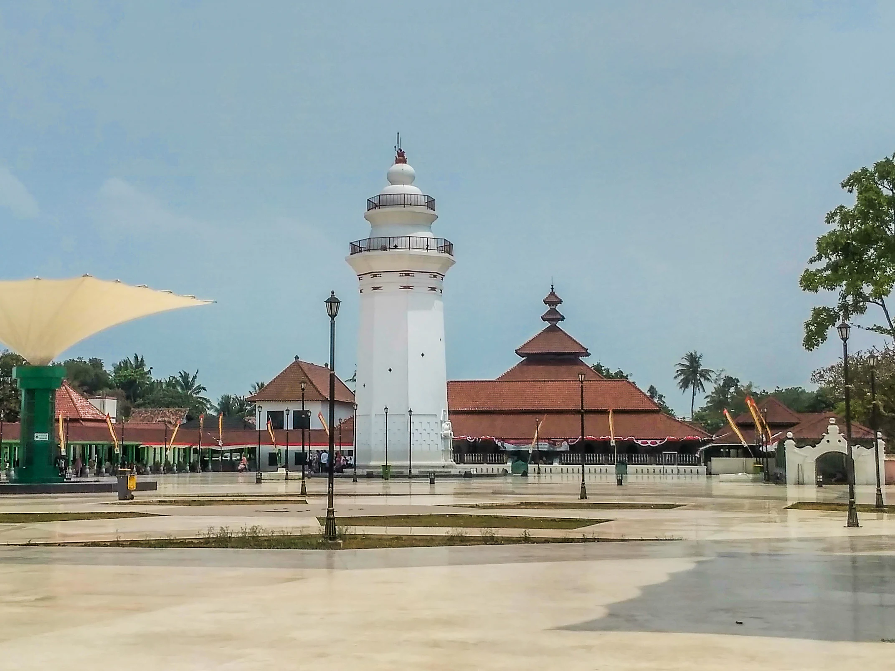

Banten
Sebuah provinsi yang terletak di pulau jawa, tepatnya paling barat pulau jawa. Dulunya Banten termasuk kedalam Provinsi Jawa Barat, namun pada akhir tahun 99' Banten memisahkan diri dan menjadi provinsi yang berdiri sendiri,tata letak yang strategis menjadikan Banten sebagai tempat persinggahan pertama bangsa Belanda di pulau jawa pada awal zaman kolonial.
Bahasa yang digunakan Masyarakat Banten secara umum ada 3, untuk wilayah selatan dan barat Banten masyarakat biasanya menggunakan bahasa sunda, untuk masyarakat yang berada di wilayah utara menggunakan bahasa Jawa Serang (jaseng) dan untuk masyarakat yang berada di wilayah timur menggunakan bahasa betawi atau bahasa gaul jakarta. Maka dari itu, budaya yang ada di Banten khususnya bahasa masih mengikuti wilayah terdekatnya yaitu Suku Sunda, Suku Jawa dan Suku Betawi.